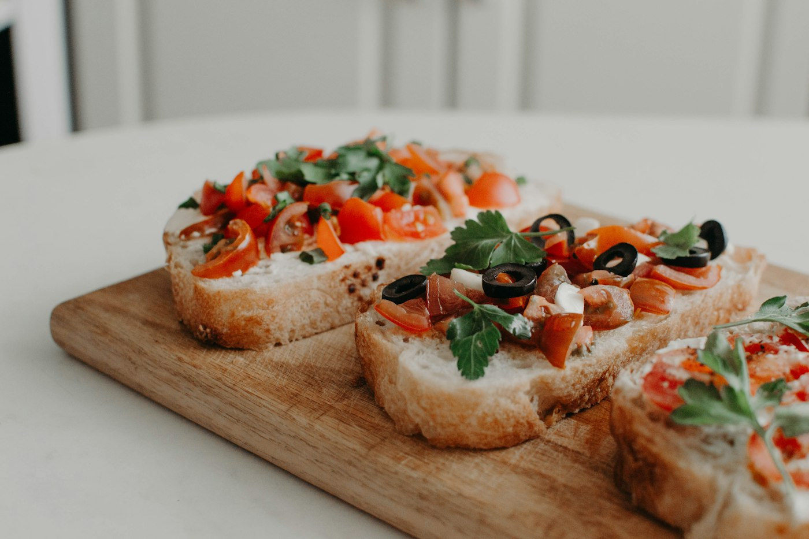

Antipasti
Caldi e freddi, fino a sei o sette portate.

Pizzoferrato · Majella · Abruzzo
La tavola con vista sulla Majella
Si sale a Pizzoferrato, si entra in una casa di montagna e si resta. Pasta fatta in casa, carne alla brace, la vallata davanti agli occhi.
Il ristorante
Al Casale si pranza come in una casa abruzzese: arrivano gli antipasti, poi i primi fatti in casa, poi la brace. Le porzioni sono generose. Fuori, il verde della Majella.
Testo di prova · da sostituire con le parole del titolare
La tavola
Non si sceglie da una carta lunga. Si fa il percorso della casa: gli antipasti arrivano in più portate, i primi si possono assaggiare, la carne viene dalla brace. Si chiude con i dolci e i liquori fatti in casa — gli ospiti ricordano il liquore al kiwi.
Caldi e freddi, fino a sei o sette portate.
Pasta fatta in casa, tartufo, cinghiale, orapi.
Grigliata, agnello, tegamini di montagna.
Dolci della casa, caffè, digestivi.


Foto di riferimento da altri ristoranti · non sono scatti ufficiali de Il Casale

Il paesaggio
Pizzoferrato è nel Parco Nazionale della Majella. Si viene per la tavola e si resta per la vista: il Casale sta in contrada, non in piazza, con la montagna aperta davanti alla sala.
Prenota
Per un tavolo si chiama il fisso. Meglio segnalare intolleranze, bambini o se preferite solo primo e secondo: dalla sala sanno adattarsi.